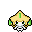
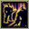
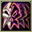
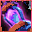
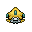
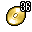

Pokédex / #385
Jirachi #385
SteelPsychic
Generations have believed that any wish written on a note on its head will come true when it awakens.
Generation 3 · Hoenn

Stats
| Attack | 100 | |
|---|---|---|
| Defense | 100 | |
| Sp. Atk | 100 | |
| Sp. Def | 100 |
In the wild
| Wild level | 100–100 |
|---|---|
| HP | 100 |
| Experience | 15 |
| Egg groups | Undiscovered |
Evolution
- Does not evolve.
Moves
| Level | Move | Type | Category | Power | Energy | Cooldown | Effect | |
|---|---|---|---|---|---|---|---|---|
| 1 | Tackle | Normal | Physical | 15 | 15 | 1s | Tackle is one of the most common and basic moves a Pokemon learns. It deals damage with no additional effects. | |
| 5 | Confusion | Psychic | Special | 50 | 60 | 12s | Confusion deals damage and has a 10% chance of confusing the target. | |
| 10 | Swift | Normal | Special | 60 | 60 | 9s | Swift deals damage and ignores changes to the Accuracy and Evasion stats. | |
| 15 | Psychic | Psychic | Special | 90 | 100 | 21s | Psychic deals damage and has a 10% chance of lowering the target's Special Defense by one stage. | |
| 20 | Zen Headbutt | Psychic | Physical | 80 | 80 | 15s | Zen Headbutt deals damage and has a 20% chance of causing the target to flinch. | |
| 25 | Dazzling Gleam | Fairy | Special | 80 | 90 | 18s | The user damages opposing Pokemon by emitting a powerful flash. | |
| 30 | Wish | Normal | Status | – | 100 | 90s | The turn Wish is used, the user will make a wish. At the end of the next turn, the Pokemon will be healed by half its own maximum HP. | |
| 35 |  | Substitute | Normal | Status | – | 200 | 120s | Creates a replacement who will take all the damage. During this the user can't use any move. |
| 40 |  | Double Team | Normal | Status | – | 150 | 90s | Double Team increases the user's speed into maximum, creating illusions. |
| 45 | Future Sight | Psychic | Special | 120 | 120 | 15s | Future Sight deals damage, but does not hit until two turns after the move is selected. | |
| 50 | Refresh | Normal | Status | – | 60 | 60s | Cures paralysis, poison, and burns. | |
| 55 | Doom Desire | Steel | Special | 140 | 140 | 24s | Two turns after this move is used, the user blasts the target with a concentrated bundle of light. | |
| 60 | Last Resort | Normal | Physical | 140 | 140 | 30s | Last Resort does damage and has no secondary effect. | |
| 65 | Double-Edge | Normal | Physical | 120 | 120 | 18s | Double-Edge deals damage and has no secondary effect. | |
| 70 |  | Cosmic Power | Psychic | Status | – | 100 | 60s | Cosmic Power boosts the Defense and Special Defense of the user by one stage each. |
Field abilities
FlashBlinkTeleport
Special abilities
Serena Grace
Egg moves
None
Technical machines
BideCalm MindDouble EdgeDouble TeamDream EaterHyper BeamLight ScreenMimicPsychicRageReflectRestSafeguardSandstormShock WaveSubstituteSwiftThunderThunder WaveThunderboltToxic
Drops
| Item | Amount | Chance | |
|---|---|---|---|
| Metal Coat | 1 | 0.2% | |
| Mind Plate | 1 | 0.1% | |
| Iron Plate | 1 | 0.1% | |
 | jirachi doll | 1 | 0.1% |
 | TM 36 | 1 | 0.1% |
| TM 10 | 1 | 0.1% | |
| held metal coat | 1 | 0.1% | |
| held twisted spoon | 1 | 0.1% | |
| TM 27 | 1 | 0.1% |